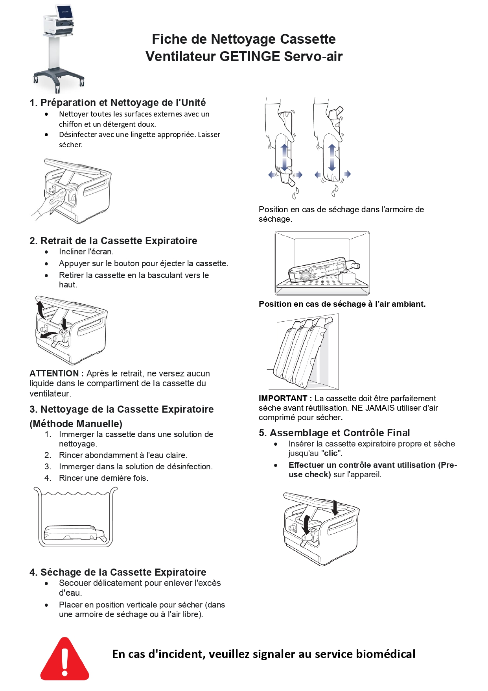
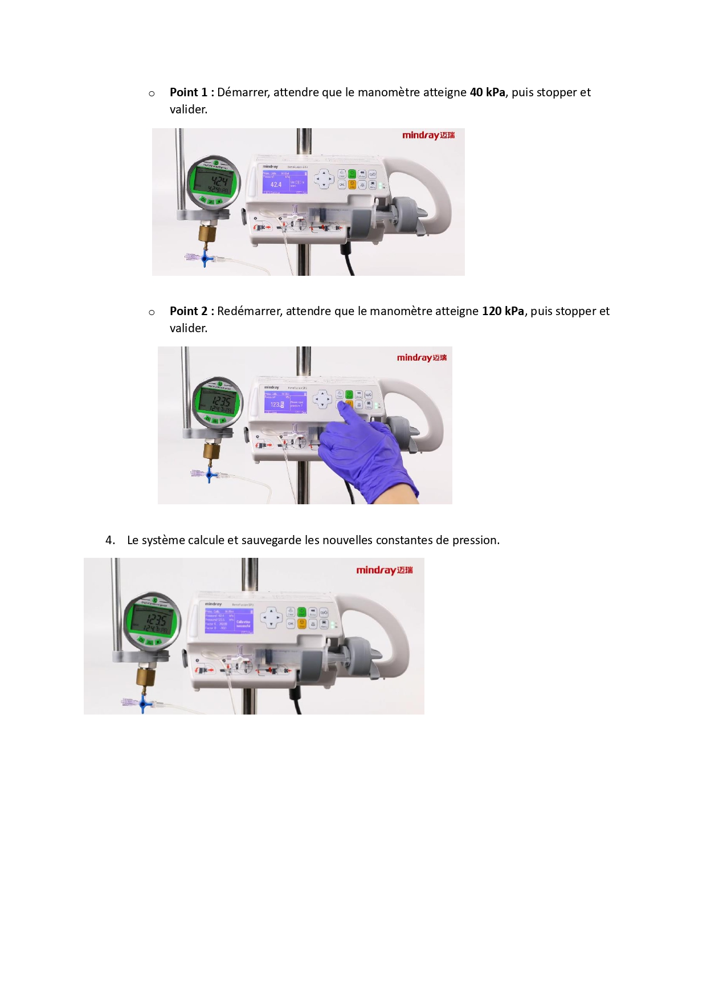
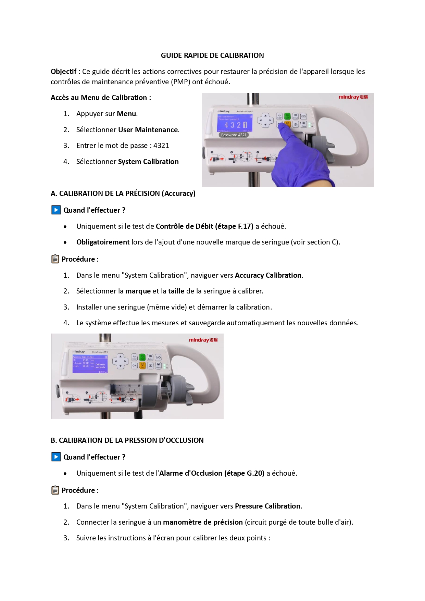
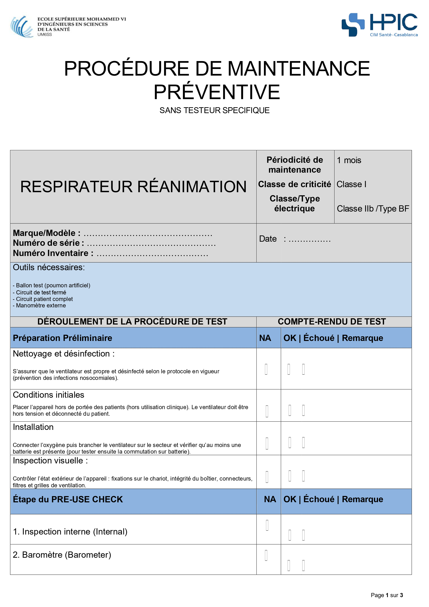
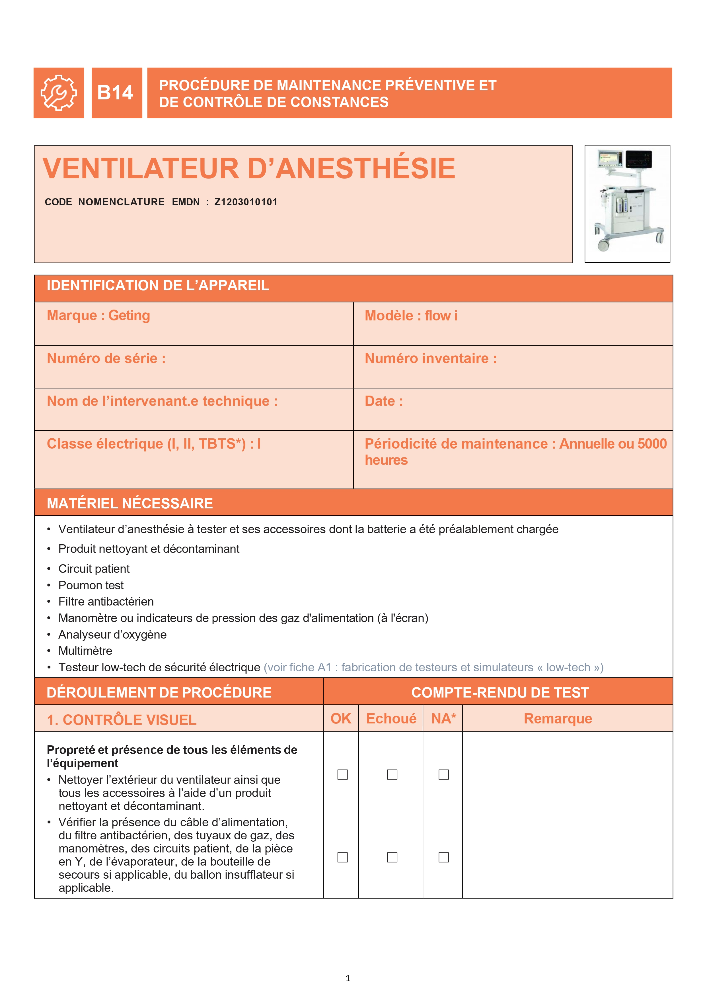
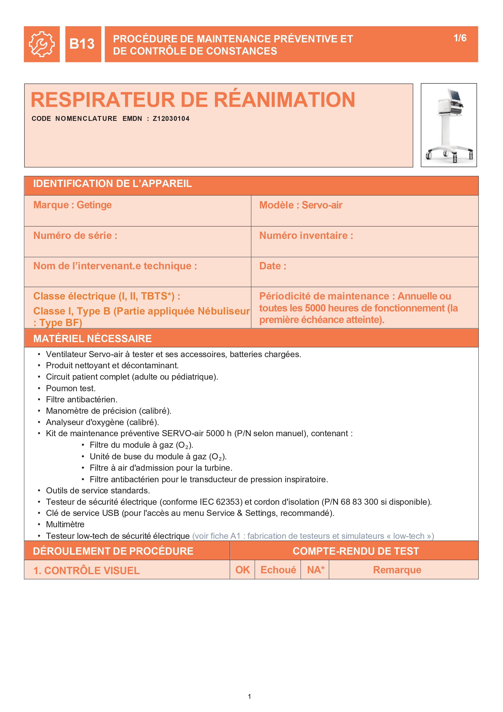
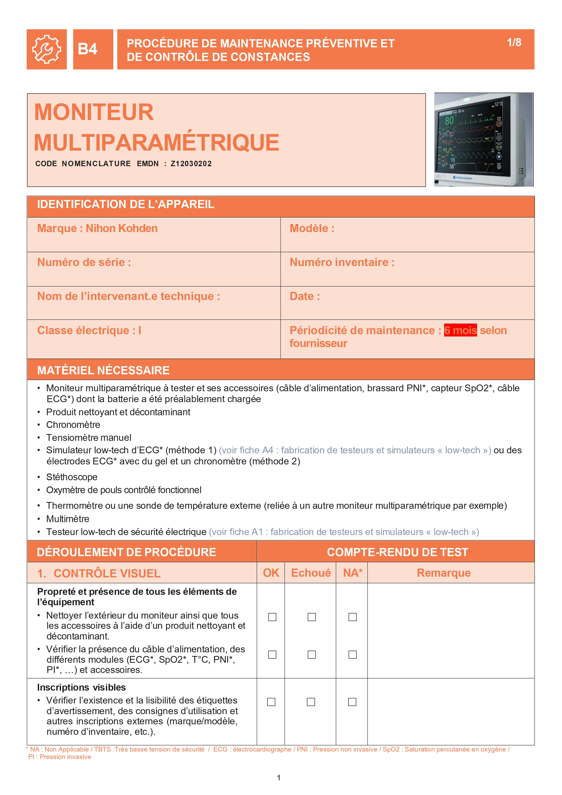
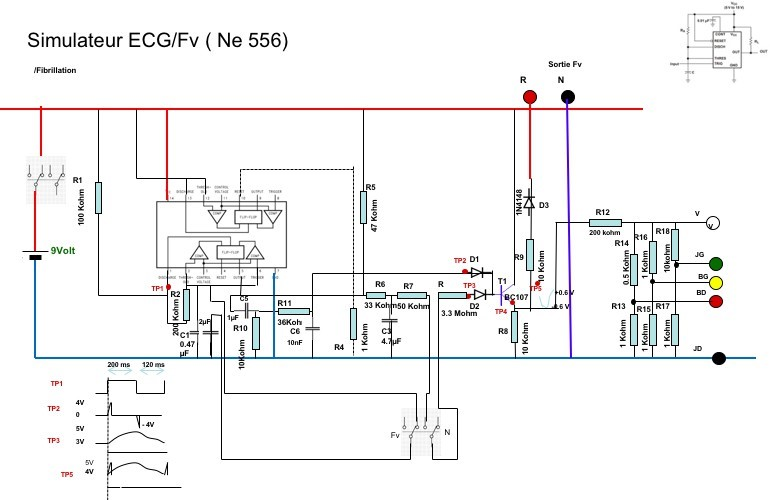
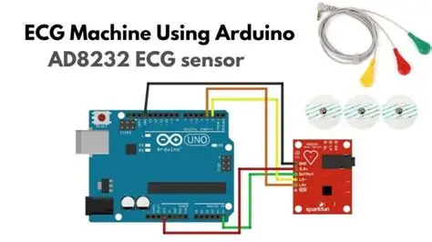
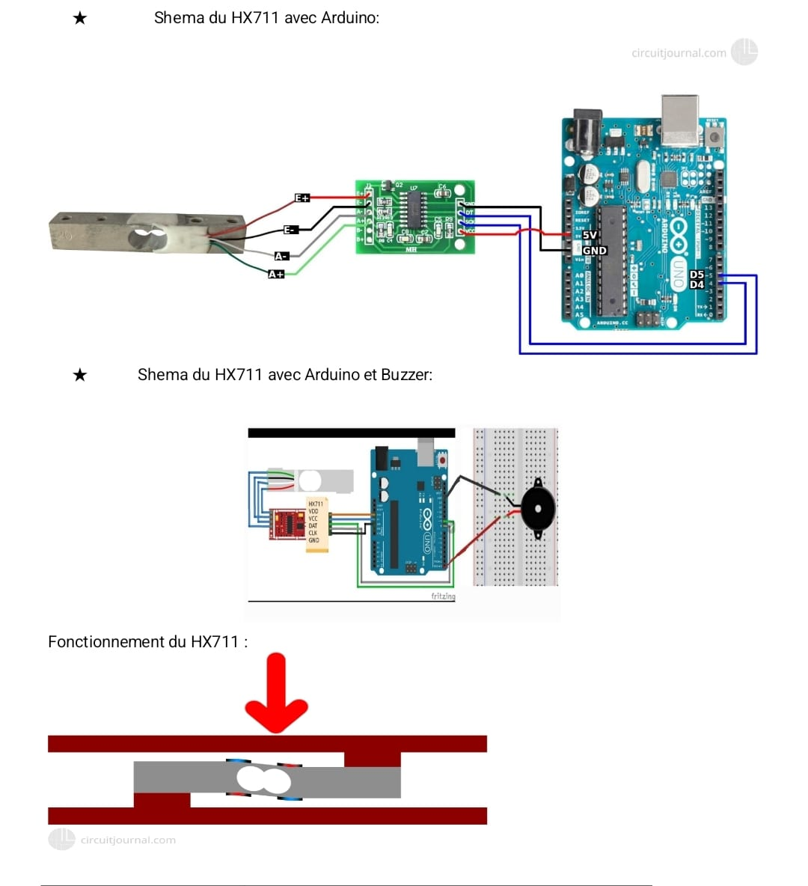

Bonjour, je suis Yassine Dahbi
Technicien en Maintenance et Génie Biomédical
Diplômé de l'ESM6ISS (UM6SS), je suis à la recherche d'un poste me permettant de mettre en pratique mes compétences et de contribuer activement à la sécurité et à la performance des équipements médicaux.

CONTACT
Téléphone : 0710713772
Email : Dahbi-YASSINE@outlook.fr
Adresse : Hay Hassani, Casablanca
LinkedIn : linkedin.com/in/yassine-dahbi
GitHub : dahbi-web.github.io
COMPÉTENCES
Compétences Techniques & Spécifiques
Compétences Transversales
LANGUES
Français : B1
Anglais : A2
CENTRES D'INTÉRÊT
CERTIFICATIONS
Respirateur de réanimation: Servo-air/n Start-up guide
Formation sur la maintenance des respirateurs de réanimation.

Respirateur d'anesthésie : Flow-c/i System Overview
Compétence sur les respirateurs d'anesthésie.

Bistouri électrique : ESG-400 Diathermy Generator
Formation sur l'unité chirurgicale avancée ESG-400.

Échographie : ACUSON Maple™ System Overview Course
Certificat de formation sur le système d'échographie ACUSON Maple™.

Endoscopie : EVIS EXERA III
Formation sur la colonne d'endoscopie EVIS EXERA III.

EXPÉRIENCES PROFESSIONNELLES
Stage Projet de fin d'études (PFE)
 Hôpital Privé International de Casablanca (HPIC)
Hôpital Privé International de Casablanca (HPIC)
- Maintenance sur divers dispositifs : amplificateur de brillance, autoclave, lit électrique, hémodialyse, respirateur d'anesthésie.
- Installation et mise en service d'équipements : Échographie, ECG, etc.
- Mise en place de procédures préventives et contrôle de sécurité électrique (moniteur multiparamétrique, défibrillateur).
- Élaboration de protocoles d'entretien et d'utilisation.
- Participation à une caravane médicale et soutien logistique aux équipes.
Stage technique
 Hôpital Privé International de Casablanca (HPIC)
Hôpital Privé International de Casablanca (HPIC)
- Maintenance, dépannage et calibration : pousse-seringue, moniteur multiparamétrique, respirateur de réanimation, autoclave.
- Rédaction de rapports techniques détaillés sur les interventions biomédicales.
- Optimisation de la gestion des équipements via un inventaire structuré.
- Exploitation de manuels techniques et d'outils de diagnostic pour identifier et corriger les défaillances.
Stage d'observation
 CHU Ibn Rochd, Casablanca
CHU Ibn Rochd, Casablanca
- Participation à la maintenance préventive et corrective d'équipements : respirateur d'anesthésie, table d'opération, etc.
- Assistance du personnel médical pour la vérification des dispositifs médicaux et leur bon fonctionnement.
PROJETS ACADÉMIQUES
Développer l'Autonomie Technique : Conception et Automatisation à l'HPIC
Mon projet de fin d'études a visé à structurer, fiabiliser et moderniser le service biomédical de l'Hôpital Privé International de Casablanca.
Mes réalisations clés incluent :
- Standardisation des pratiques de maintenance : Création de protocoles et fiches techniques détaillés et illustrés pour garantir l'uniformité et la qualité des interventions. Voici quelques exemples :
Exemple 1 : Fiche de Nettoyage (GETINGE Servo-air)
Une fiche visuelle et simple pour standardiser le nettoyage d'un équipement critique.
Exemple 2 : Procédure de Maintenance Préventive
Document cadre pour la maintenance préventive d'un respirateur de réanimation, définissant les outils, les étapes et les points de contrôle.

Exemple 3 : Guide de Calibration (Mindray Benfusion SP3)
Un guide rapide pour la calibration précise des pousse-seringues, une tâche essentielle pour la sécurité des patients.
Exemple 4 : Fiche de Nettoyage (Cassette)
Une fiche visuelle pour le nettoyage d'une cassette.

Exemple 5 : Guide de Calibration (Projet)
Un exemple de guide de calibration issu de mes projets.
Exemple 6 : Procédure de Maintenance Préventive
Un exemple de procédure de maintenance préventive.
Exemple 7 : Maintenance Préventive Respirateur
Un exemple de document pour la maintenance préventive d'un respirateur.
Exemple 8 : Maintenance Réanimation
Un exemple de document pour la maintenance d'un équipement de réanimation.
Exemple 9 : Maintenance Préventive Moniteur
Un exemple de document pour la maintenance préventive d'un moniteur.
Exemple 10 : Procédure de Maintenance
Un autre exemple de procédure de maintenance préventive.
Exemple 11 : Maintenance Préventive Respirateur
Document de maintenance préventive pour un respirateur.

Prototypage de solutions de test et de mesure
Conception et réalisation de plusieurs dispositifs basés sur Arduino pour répondre à des besoins concrets en instrumentation biomédicale.
Voici les prototypes réalisés :
1. Testeur ECG
Création d'un prototype de testeur pour vérifier le bon fonctionnement des appareils ECG, assurant la fiabilité des diagnostics.
2. Moniteur ECG
Réalisation d'un moniteur ECG fonctionnel pour l'acquisition et la visualisation des signaux cardiaques.
3. Système de mesure pour poche de perfusion
Développement d'un système pour mesurer et afficher le niveau de remplissage, optimisant la surveillance en temps réel.
FORMATION
Licence en Maintenance et Génie Biomédical
ESM6ISS – Casablanca, Maroc
2022-2025